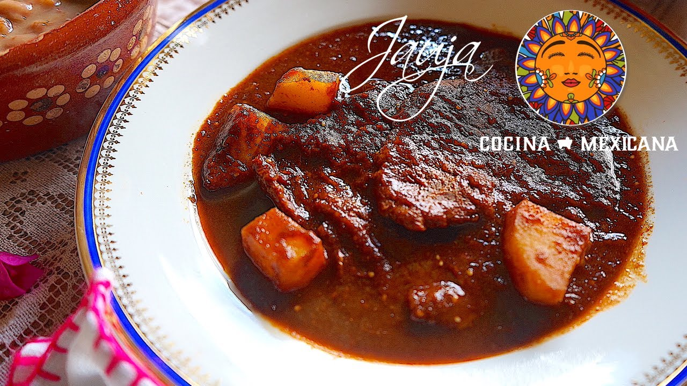

Popocha

Descripción
Las popochas son pescado blanco deshidratado; en la actualidad el platillo se elabora también con carpa. El valle de Toluca está rodeado de antiguas zonas lacustres, de las que seguramente
se abastecían de este peculiar ingrediente. Si bien es cierto que las popochas se pueden hacer todo el año, es en los meses de junio, julio y agosto cuando su consumo aumenta en cantidades
considerables. Algunos ingredientes de la temporada son los compañeros idóneos para comerse, como las flores y guías de calabaza
Ingredientes
- 1 popocha
- 3 chiles pasilla
- 1/4 de cebolla
- 2 dientes de ajo
- Manteca, la necesaria
- Granos de maíz nixtamalizado
- Una papa hervida en rodajas
- 1 rama de epazote
- Agua, la necesaria
- Sal, al gusto
Preparación
- Lavar la popocha con una escobeta de canutillo, para limpiarla y quitarle el exceso de tierra y sal
- Posteriormente, secarla y tenderla para que se escurra
- Tostar el chile pasilla en un comal, remojarlo en agua caliente hasta ablandarlo y desvenarlo
- Molerlo en el metate y agregar los granos de maíz, el ajo y la cebolla para que vaya tomando consistencia de salsa
- En una cacerola de barro agregar un poco de manteca de cerdo, dejar que se caliente y tostar por ambos lados la popocha a fin de que se dore, retirarla
- Agregar la molienda de chile en la mateca caliente para que se sazone y agregar agua hasta obtener consistencia semiespesa
- Una vez que la salsa este cocida, incorporar nuevamente la popocha
- Servirse con papas hervidas